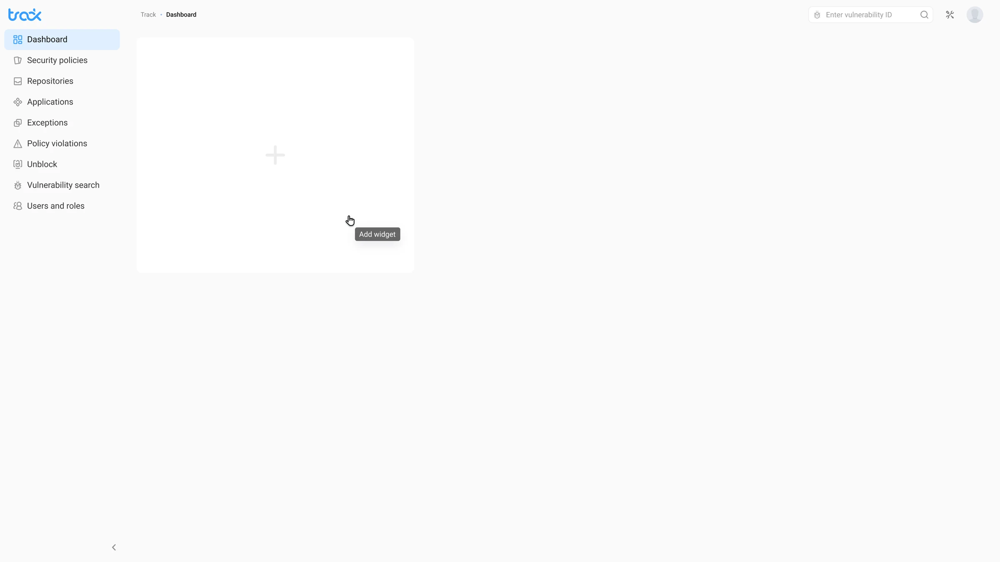

Context
Security teams started from different first questions:
- DevOps watched the repositories,
- the AppSec analyst — severity and applications
- the manager — policies and violations
A single static dashboard couldn't serve everyone: it gave noise to some roles and blind spots to others, and each team still pulled the metrics it needed by hand or went to a neighbouring team for them.
Design challenge
I had to give users control over their overview without turning setup into a complex configurator. The empty state had to lead to the first action, and the widget picker had to explain the choice before applying it.

My role
I designed the dashboard from role-based scenarios to handoff: IA, empty state, widget picker, the populated dashboard, expanded view and severity visualization. I worked with PM, security analysts and engineering.
Goals
- Organize the dashboard around role questions, not chart types
- Design the empty state and widget picker as a short path to the first overview
- Build the populated dashboard: hierarchy, widget sizes and data priority
- Assemble the expanded view and a severity system for different visualization types
Solution
The empty state as a starting point, not a dead end: the empty screen immediately offers an action — add a widget. A large “+” area shows that a personal overview will appear here.

Widget picker: an informed choice: the picker shows widget previews before confirmation. Select all speeds up the start, manual selection gives control, and active badges show the current set.

Populated dashboard: a single security overview: the overview brings together severity, vulnerable applications, blocked repositories and policy triggers. The Critical/High/Medium/Low/Informational color system stays consistent across all widgets.
Expanded view: detail without losing context: a widget expands into a detailed mode with a stacked bar chart, time period and severity hover states. You can return to the overview in one click.

Outcome
- 1 minute to assemble a personal security overview for your role.
- Each role works with its own picture: DevOps, the analyst and the manager assemble the metrics they need in one place and stop arguing over whose dashboard is the “right” one.
- The dashboard grows without a rewrite: a new widget is added without breaking the logic of the rest — the product scales instead of being rebuilt from scratch.